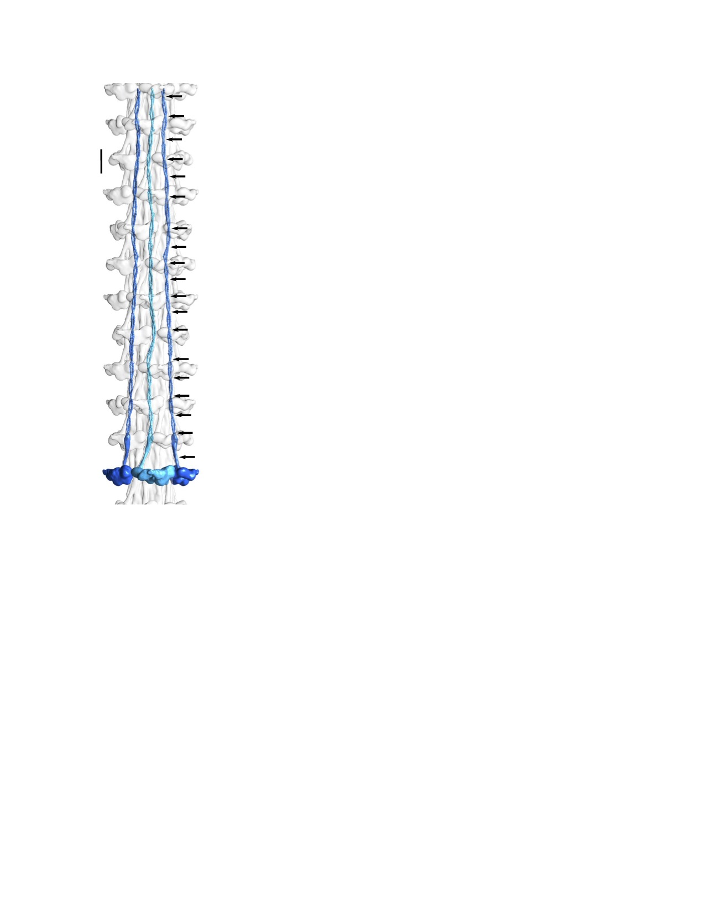

This is a webpage describing my research in summary
My name is Hosna Rastegarpouyani and I am a third year PhD student in biology. I joined Dr. Kenneth Taylor's lab in 2019. In Taylor's lab the focus of most of the projects is on the structure of sarcomere proteins. You can read more about Dr. Taylor's research here.
Sarcomeres of striated muscle are composed of four basic components:
Bipolar, myosin-containing thick filaments
Polar, actin- containing thin filaments
A Z-disk which cross-links antiparallel actin filaments into a bipolar structure
A connecting filament to link the thick filaments to the Z-disk.
You can see these components in figure 1.
Fig 1: A schematic image of a sarcomere
Of these four elements, the thin filaments are better characterized than the others. In Taylor's lab there are four graduate students working on the myosin-containing thick filaments, the least characterized component structurally. Currently, I am trying to report a high resolution structure of the vertebrate's thick filament using cryogenic electron microscopy (cryo-EM).
Myosin-containing thick filaments

Thick filament is a filamentous form of the myosin II, a member of a super family of motor proteins, and some non-myosin proteins. Myosin II is two-headed dimers, each composing of a head, neck and a tail. Each dimer has one heavy chain (HC)(2*200kDa) with two light chains (LC)(~29kDa): regulatory (RLC) and essential (ELC).The heads have ATPase function to generate the required force for moving along the actin filament leading to contraction of the muscle. The tail is a long coiled-coil consists of alfa helices coiling around each other.
Striated muscle thick filaments contain non-myosin components that play structural and regulatory roles. You can see some of the most importsant ones in the table below.
`
Non-myosin proteins
Molecular weight
Function
Muscle type
Paramyosin
69 KDa
This may serve to strengthen these filaments against the high loads they must bear
> IFM
> Titin
>~3 MDa
It functions as a template for the assembly of the sarcomere during development